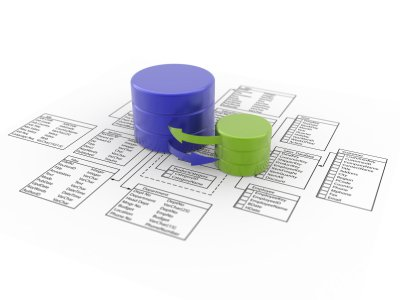

Homepage
Schedule
Starts: 10/10/2011
Ends: 12/12/2011
Description
Databases are incredibly prevalent -- they underlie technology used by most people every day if not every hour. Databases reside behind a huge fraction of websites; they're a crucial component of telecommunications systems, banking systems, video games, and just about any other software system or electronic device that maintains some amount of persistent information. In addition to persistence, database systems provide a number of other properties that make them exceptionally useful and convenient: reliability, efficiency, scalability, concurrency control, data abstractions, and high-level query languages. Databases are so ubiquitous and important that computer science graduates frequently cite their database class as the one most useful to them in their industry or graduate-school careers.
Instructor
- Prof. Jennifer Widom, is the Fletcher Jones Professor and Chair of the Computer Science Department at Stanford University. She received her Bachelors degree from the Indiana University School of Music in 1982 and her Computer Science Ph.D. from Cornell University in 1987. She was a Research Staff Member at the IBM Almaden Research Center before joining the Stanford faculty in 1993. Her research interests span many aspects of nontraditional data management. She is an ACM Fellow and a member of the National Academy of Engineering and the American Academy of Arts & Sciences; she received the ACM SIGMOD Edgar F. Codd Innovations Award in 2007 and was a Guggenheim Fellow in 2000; she has served on a variety of program committees, advisory boards, and editorial boards.
Includes
- weekly video lectures
- assignments
- two exams (with some flexibility in when you take them)
- online discussion forum
Provides
- database design and the use of database management systems for applications:
- relational model
- relational algebra
- SQL
- XML
- DTDs
- XML Schema for validation
- query and transformation languages
- XPath
- XQuery
- XSLT
- database design in UML
- relational design principles based on dependencies and normal forms
- additional key database topics from the design and application-building perspective:
- indexes
- views
- transactions
- authorization
- integrity constraints
- triggers
- on-line analytical processing (OLAP)
- "NoSQL" systems
Requires
- a solid computer science foundation
- a reasonable amount of programming
- knowledge of basic computer science theory
Bibliography
- lecture notes